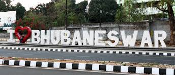

Bhubaneswar, literally translating to ‘the Lord of the Universe’, Bhubaneswar is an ancient city in Odisha state of India that packs in many centuries of fascinating history. It was the cradle of Kalingan Architecture. At one point it was home to over 1000 temples of which 350 odd still remain. Earning the city, the epitaph – The City of Temples. It is the capital city, an educational and cultural hub as well.
Get enraptured by a myriad of tourist attractions in Bhubaneswar ranging from monuments of ancient history, breathtaking temple architecture & Buddhist sites, art & craft villages, museums and artefacts that never ceases to amaze.
